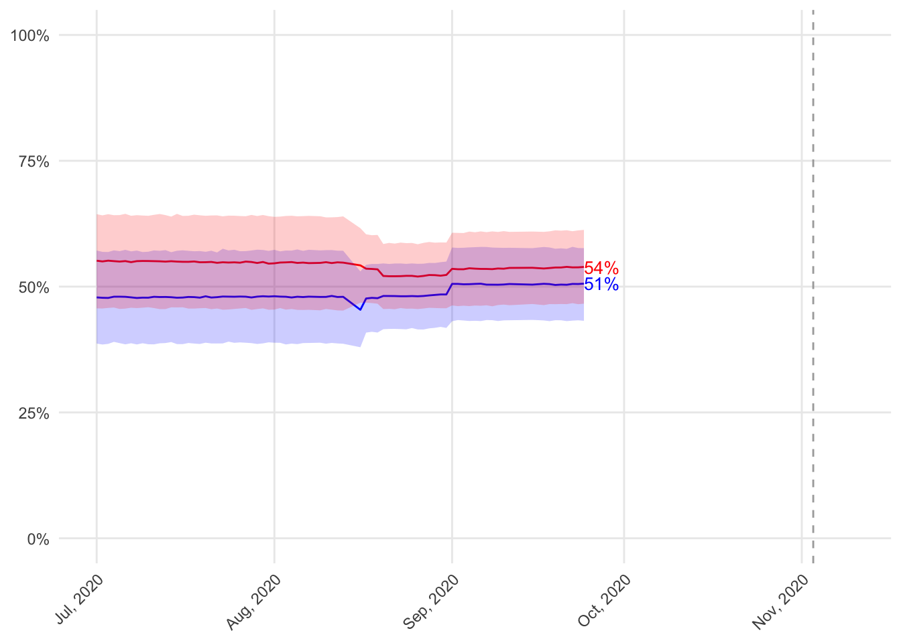
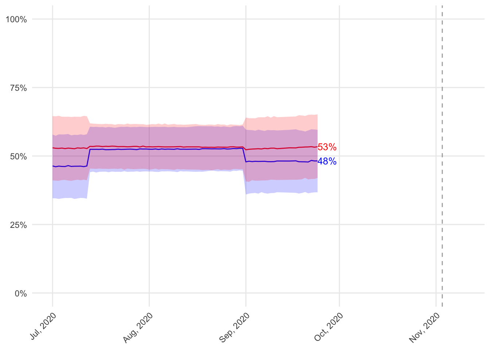
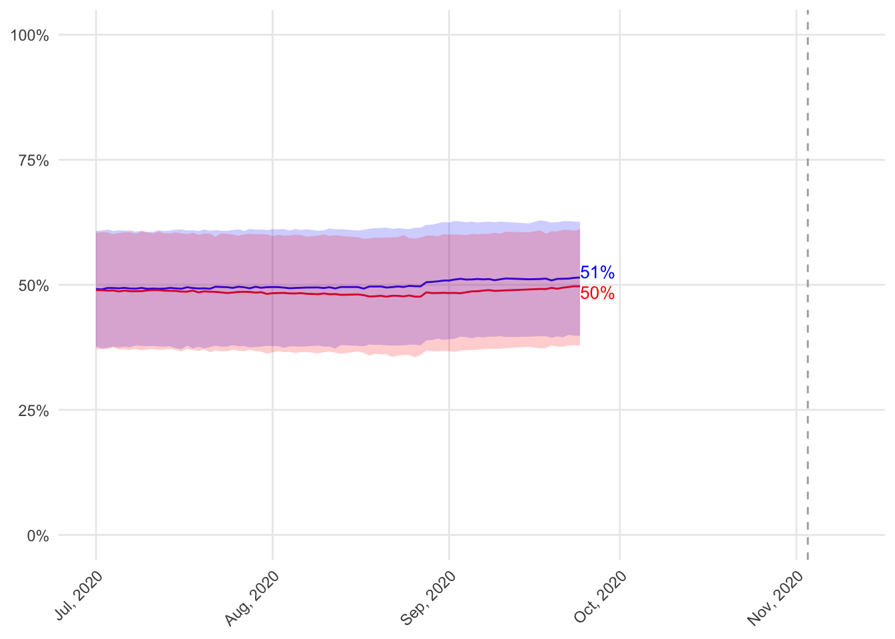
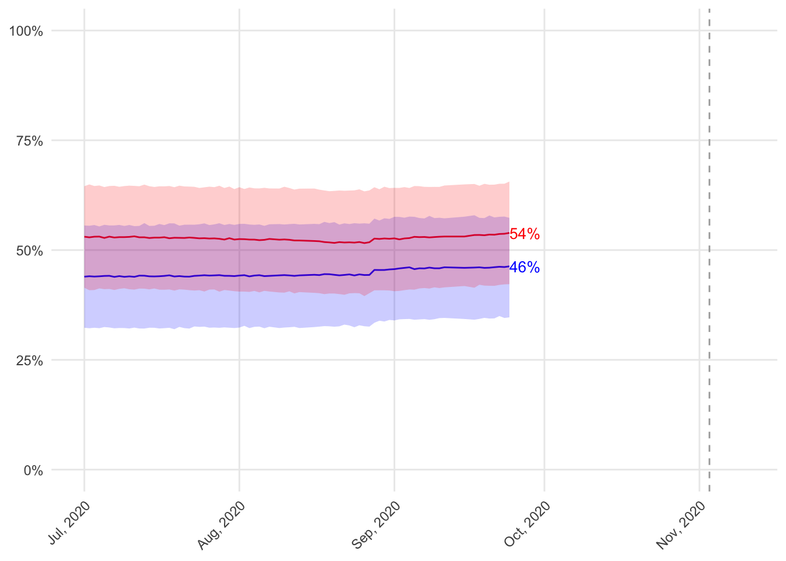
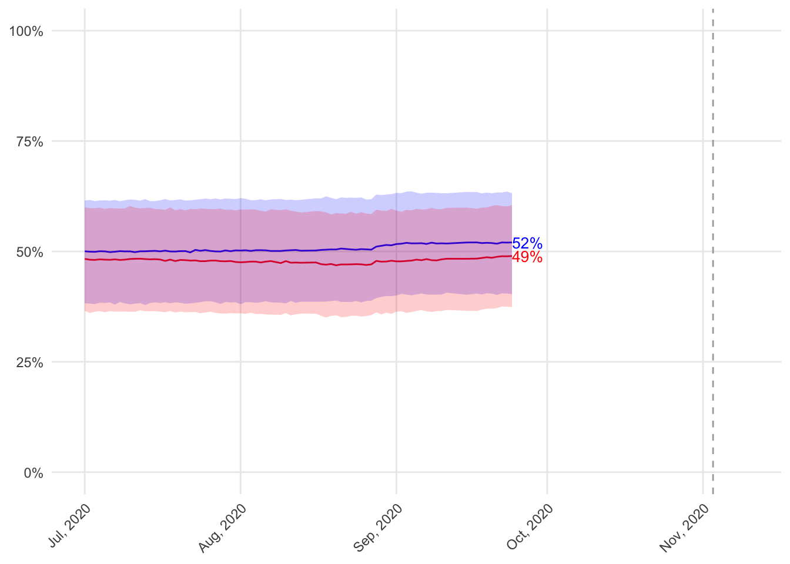
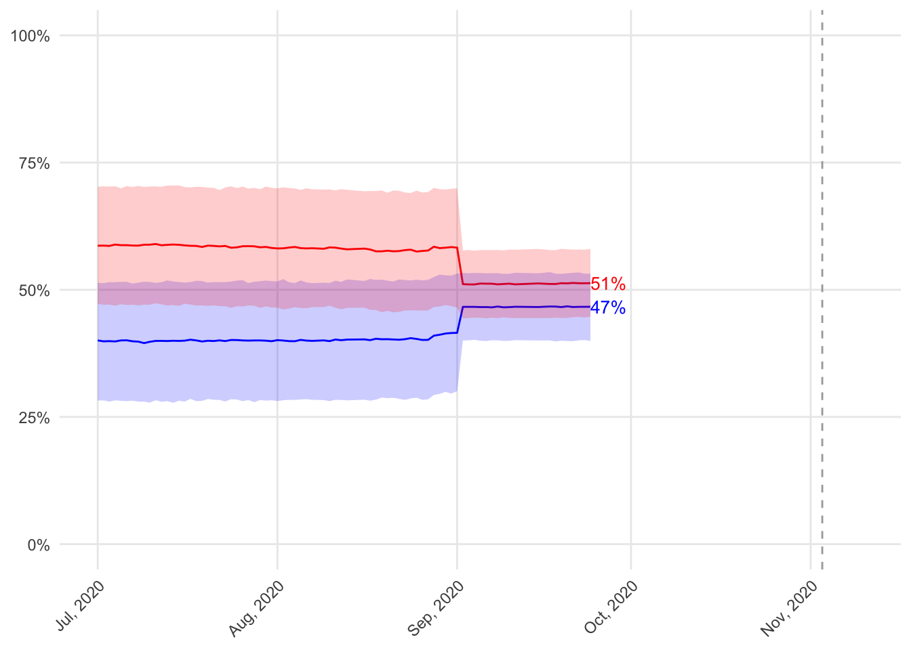
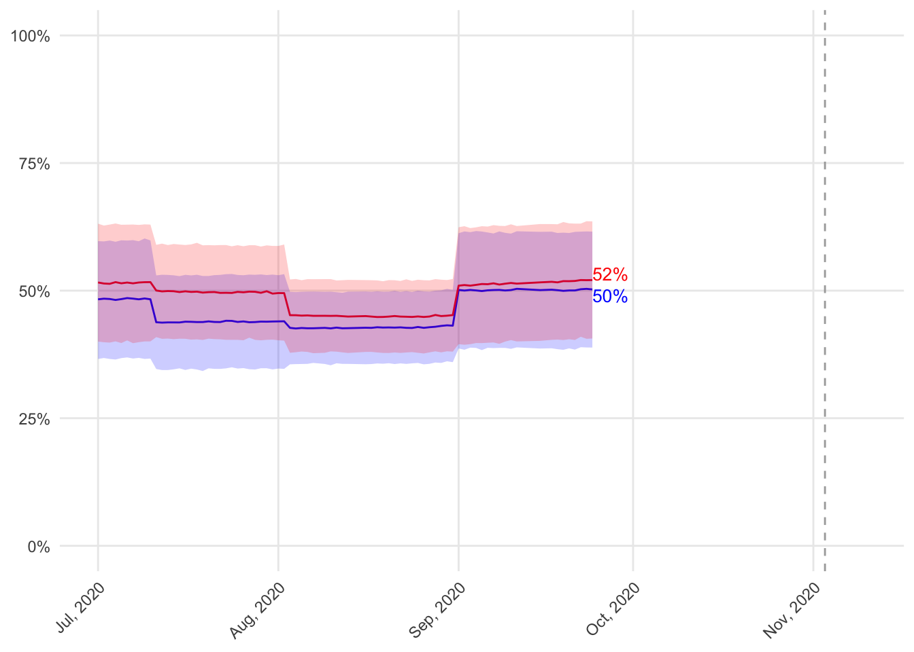
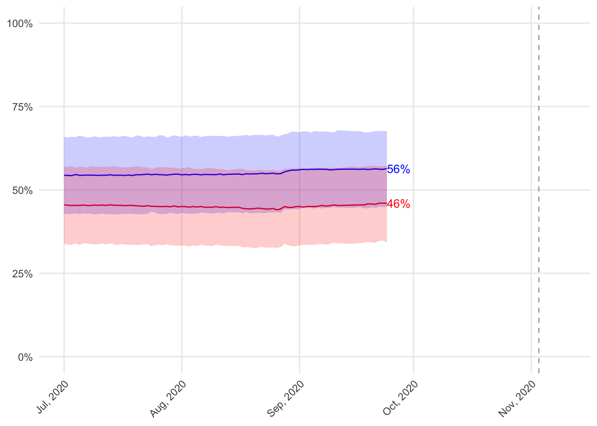
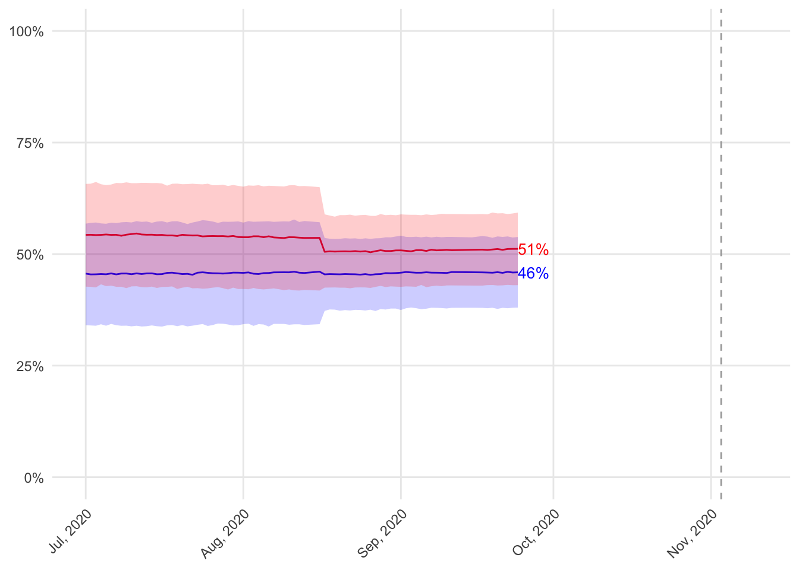

2020 - House
Updated October 27, 2020, 7 days from election day 2020.
Who will win control of the House?
The Democrats are projected to win between 198 and 270 seats in the House. The Republicans are projected to win between 165 and 237 seats in the House. In 10000 simulations of the House elections from the perspective of October 27, 2020, the Democrats win a majority in 76% and the Republicans win a majority in 24%.


Who will win each district?
Among the 435 House districts, 93 (21%) are competitive (meaning that the Democrat or Republican is not a shoe-in) as of October 27, 2020. The table below lists the competitive districts arranged by partisan lean.

Competitive districts
Alaska-0
The Democrat is projected to receive between 35% and 58% of the vote in Alaska-0. The Republican is projected to receive between 44% and 67%. Out of 10000 simulations of the election in Alaska-0, the Democrat wins 14% and the Republican wins 85%.

Arizona-1
The Democrat is projected to receive between 42% and 65% of the vote in Arizona-1. The Republican is projected to receive between 37% and 60%. Out of 10000 simulations of the election in Arizona-1, the Democrat wins 77% and the Republican wins 23%.

Arizona-2
The Democrat is projected to receive between 43% and 66% of the vote in Arizona-2. The Republican is projected to receive between 36% and 59%. Out of 10000 simulations of the election in Arizona-2, the Democrat wins 80% and the Republican wins 20%.
Arizona-6
The Democrat is projected to receive between 42% and 56% of the vote in Arizona-6. The Republican is projected to receive between 46% and 60%. Out of 10000 simulations of the election in Arizona-6, the Democrat wins 10% and the Republican wins 90%.

Arkansas-2
The Democrat is projected to receive between 44% and 57% of the vote in Arkansas-2. The Republican is projected to receive between 47% and 60%. Out of 10000 simulations of the election in Arkansas-2, the Democrat wins 16% and the Republican wins 84%.

California-4
The Democrat is projected to receive between 39% and 54% of the vote in California-4. The Republican is projected to receive between 45% and 60%. Out of 10000 simulations of the election in California-4, the Democrat wins 12% and the Republican wins 88%.

California-7
The Democrat is projected to receive between 44% and 66% of the vote in California-7. The Republican is projected to receive between 36% and 58%. Out of 10000 simulations of the election in California-7, the Democrat wins 81% and the Republican wins 19%.

California-10
The Democrat is projected to receive between 41% and 63% of the vote in California-10. The Republican is projected to receive between 39% and 61%. Out of 10000 simulations of the election in California-10, the Democrat wins 69% and the Republican wins 30%.

California-22
The Democrat is projected to receive between 36% and 58% of the vote in California-22. The Republican is projected to receive between 44% and 67%. Out of 10000 simulations of the election in California-22, the Democrat wins 17% and the Republican wins 83%.

California-25
The Democrat is projected to receive between 45% and 58% of the vote in California-25. The Republican is projected to receive between 44% and 57%. Out of 10000 simulations of the election in California-25, the Democrat wins 58% and the Republican wins 42%.
California-39
The Democrat is projected to receive between 44% and 60% of the vote in California-39. The Republican is projected to receive between 42% and 59%. Out of 10000 simulations of the election in California-39, the Democrat wins 66% and the Republican wins 33%.

California-45
The Democrat is projected to receive between 41% and 64% of the vote in California-45. The Republican is projected to receive between 39% and 62%. Out of 10000 simulations of the election in California-45, the Democrat wins 68% and the Republican wins 32%.

California-48
The Democrat is projected to receive between 42% and 65% of the vote in California-48. The Republican is projected to receive between 37% and 60%. Out of 10000 simulations of the election in California-48, the Democrat wins 75% and the Republican wins 25%.
California-50
The Democrat is projected to receive between 43% and 56% of the vote in California-50. The Republican is projected to receive between 46% and 59%. Out of 10000 simulations of the election in California-50, the Democrat wins 33% and the Republican wins 66%.

Colorado-3
The Democrat is projected to receive between 33% and 56% of the vote in Colorado-3. The Republican is projected to receive between 43% and 67%. Out of 10000 simulations of the election in Colorado-3, the Democrat wins 12% and the Republican wins 88%.

Colorado-6
The Democrat is projected to receive between 44% and 66% of the vote in Colorado-6. The Republican is projected to receive between 34% and 57%. Out of 10000 simulations of the election in Colorado-6, the Democrat wins 83% and the Republican wins 17%.

Connecticut-5
The Democrat is projected to receive between 44% and 67% of the vote in Connecticut-5. The Republican is projected to receive between 35% and 58%. Out of 10000 simulations of the election in Connecticut-5, the Democrat wins 84% and the Republican wins 16%.

Florida-18
The Democrat is projected to receive between 34% and 57% of the vote in Florida-18. The Republican is projected to receive between 45% and 68%. Out of 10000 simulations of the election in Florida-18, the Democrat wins 12% and the Republican wins 88%.
Florida-26
The Democrat is projected to receive between 39% and 57% of the vote in Florida-26. The Republican is projected to receive between 43% and 61%. Out of 10000 simulations of the election in Florida-26, the Democrat wins 63% and the Republican wins 37%.

Florida-27
The Democrat is projected to receive between 41% and 56% of the vote in Florida-27. The Republican is projected to receive between 43% and 58%. Out of 10000 simulations of the election in Florida-27, the Democrat wins 73% and the Republican wins 27%.

Georgia-6
The Democrat is projected to receive between 47% and 60% of the vote in Georgia-6. The Republican is projected to receive between 46% and 59%. Out of 10000 simulations of the election in Georgia-6, the Democrat wins 62% and the Republican wins 38%.

Georgia-7
The Democrat is projected to receive between 38% and 56% of the vote in Georgia-7. The Republican is projected to receive between 39% and 58%. Out of 10000 simulations of the election in Georgia-7, the Democrat wins 44% and the Republican wins 55%.

Illinois-6
The Democrat is projected to receive between 42% and 65% of the vote in Illinois-6. The Republican is projected to receive between 37% and 60%. Out of 10000 simulations of the election in Illinois-6, the Democrat wins 76% and the Republican wins 24%.

Illinois-12
The Democrat is projected to receive between 35% and 57% of the vote in Illinois-12. The Republican is projected to receive between 43% and 66%. Out of 10000 simulations of the election in Illinois-12, the Democrat wins 15% and the Republican wins 84%.
Illinois-13
The Democrat is projected to receive between 45% and 57% of the vote in Illinois-13. The Republican is projected to receive between 46% and 59%. Out of 10000 simulations of the election in Illinois-13, the Democrat wins 25% and the Republican wins 75%.

Illinois-14
The Democrat is projected to receive between 41% and 64% of the vote in Illinois-14. The Republican is projected to receive between 38% and 61%. Out of 10000 simulations of the election in Illinois-14, the Democrat wins 69% and the Republican wins 30%.

Indiana-5
The Democrat is projected to receive between 43% and 58% of the vote in Indiana-5. The Republican is projected to receive between 47% and 61%. Out of 10000 simulations of the election in Indiana-5, the Democrat wins 28% and the Republican wins 72%.

Iowa-1
The Democrat is projected to receive between 43% and 62% of the vote in Iowa-1. The Republican is projected to receive between 40% and 59%. Out of 10000 simulations of the election in Iowa-1, the Democrat wins 71% and the Republican wins 29%.

Iowa-2
The Democrat is projected to receive between 41% and 58% of the vote in Iowa-2. The Republican is projected to receive between 37% and 55%. Out of 10000 simulations of the election in Iowa-2, the Democrat wins 72% and the Republican wins 27%.

Iowa-3
The Democrat is projected to receive between 46% and 60% of the vote in Iowa-3. The Republican is projected to receive between 42% and 57%. Out of 10000 simulations of the election in Iowa-3, the Democrat wins 64% and the Republican wins 36%.

Iowa-4
The Democrat is projected to receive between 36% and 59% of the vote in Iowa-4. The Republican is projected to receive between 41% and 65%. Out of 10000 simulations of the election in Iowa-4, the Democrat wins 20% and the Republican wins 80%.

Kansas-2
The Democrat is projected to receive between 40% and 53% of the vote in Kansas-2. The Republican is projected to receive between 43% and 57%. Out of 10000 simulations of the election in Kansas-2, the Democrat wins 25% and the Republican wins 75%.

Kansas-3
The Democrat is projected to receive between 43% and 65% of the vote in Kansas-3. The Republican is projected to receive between 35% and 58%. Out of 10000 simulations of the election in Kansas-3, the Democrat wins 80% and the Republican wins 19%.

Kentucky-6
The Democrat is projected to receive between 37% and 60% of the vote in Kentucky-6. The Republican is projected to receive between 42% and 65%. Out of 10000 simulations of the election in Kentucky-6, the Democrat wins 21% and the Republican wins 79%.

Michigan-3
The Democrat is projected to receive between 40% and 52% of the vote in Michigan-3. The Republican is projected to receive between 44% and 57%. Out of 10000 simulations of the election in Michigan-3, the Democrat wins 25% and the Republican wins 75%.

Michigan-6
The Democrat is projected to receive between 42% and 55% of the vote in Michigan-6. The Republican is projected to receive between 42% and 55%. Out of 10000 simulations of the election in Michigan-6, the Democrat wins 28% and the Republican wins 72%.

Michigan-7
The Democrat is projected to receive between 35% and 57% of the vote in Michigan-7. The Republican is projected to receive between 45% and 67%. Out of 10000 simulations of the election in Michigan-7, the Democrat wins 13% and the Republican wins 87%.

Michigan-8
The Democrat is projected to receive between 40% and 63% of the vote in Michigan-8. The Republican is projected to receive between 38% and 61%. Out of 10000 simulations of the election in Michigan-8, the Democrat wins 68% and the Republican wins 32%.

Michigan-11
The Democrat is projected to receive between 41% and 64% of the vote in Michigan-11. The Republican is projected to receive between 37% and 59%. Out of 10000 simulations of the election in Michigan-11, the Democrat wins 75% and the Republican wins 25%.

Minnesota-1
The Democrat is projected to receive between 41% and 53% of the vote in Minnesota-1. The Republican is projected to receive between 42% and 55%. Out of 10000 simulations of the election in Minnesota-1, the Democrat wins 30% and the Republican wins 70%.

Minnesota-2
The Democrat is projected to receive between 41% and 64% of the vote in Minnesota-2. The Republican is projected to receive between 38% and 61%. Out of 10000 simulations of the election in Minnesota-2, the Democrat wins 71% and the Republican wins 29%.

Minnesota-3
The Democrat is projected to receive between 44% and 67% of the vote in Minnesota-3. The Republican is projected to receive between 35% and 58%. Out of 10000 simulations of the election in Minnesota-3, the Democrat wins 71% and the Republican wins 29%.

Minnesota-7
The Democrat is projected to receive between 40% and 56% of the vote in Minnesota-7. The Republican is projected to receive between 47% and 63%. Out of 10000 simulations of the election in Minnesota-7, the Democrat wins 69% and the Republican wins 31%.

Minnesota-8
The Democrat is projected to receive between 35% and 57% of the vote in Minnesota-8. The Republican is projected to receive between 42% and 66%. Out of 10000 simulations of the election in Minnesota-8, the Democrat wins 17% and the Republican wins 83%.

Missouri-2
The Democrat is projected to receive between 45% and 58% of the vote in Missouri-2. The Republican is projected to receive between 45% and 58%. Out of 10000 simulations of the election in Missouri-2, the Democrat wins 14% and the Republican wins 86%.

Montana-0
The Democrat is projected to receive between 36% and 58% of the vote in Montana-0. The Republican is projected to receive between 42% and 65%. Out of 10000 simulations of the election in Montana-0, the Democrat wins 32% and the Republican wins 68%.

Nebraska-2
The Democrat is projected to receive between 45% and 60% of the vote in Nebraska-2. The Republican is projected to receive between 48% and 63%. Out of 10000 simulations of the election in Nebraska-2, the Democrat wins 24% and the Republican wins 76%.

Nevada-3
The Democrat is projected to receive between 41% and 65% of the vote in Nevada-3. The Republican is projected to receive between 35% and 58%. Out of 10000 simulations of the election in Nevada-3, the Democrat wins 79% and the Republican wins 21%.

Nevada-4
The Democrat is projected to receive between 41% and 64% of the vote in Nevada-4. The Republican is projected to receive between 35% and 58%. Out of 10000 simulations of the election in Nevada-4, the Democrat wins 77% and the Republican wins 23%.

New Hampshire-1
The Democrat is projected to receive between 42% and 65% of the vote in New Hampshire-1. The Republican is projected to receive between 36% and 59%. Out of 10000 simulations of the election in New Hampshire-1, the Democrat wins 77% and the Republican wins 23%.

New Jersey-2
The Democrat is projected to receive between 47% and 59% of the vote in New Jersey-2. The Republican is projected to receive between 43% and 55%. Out of 10000 simulations of the election in New Jersey-2, the Democrat wins 37% and the Republican wins 63%.

New Jersey-3
The Democrat is projected to receive between 41% and 59% of the vote in New Jersey-3. The Republican is projected to receive between 40% and 58%. Out of 10000 simulations of the election in New Jersey-3, the Democrat wins 62% and the Republican wins 38%.

New Jersey-7
The Democrat is projected to receive between 41% and 64% of the vote in New Jersey-7. The Republican is projected to receive between 38% and 61%. Out of 10000 simulations of the election in New Jersey-7, the Democrat wins 71% and the Republican wins 29%.

New Mexico-2
The Democrat is projected to receive between 41% and 60% of the vote in New Mexico-2. The Republican is projected to receive between 42% and 60%. Out of 10000 simulations of the election in New Mexico-2, the Democrat wins 64% and the Republican wins 36%.

New York-1
The Democrat is projected to receive between 41% and 54% of the vote in New York-1. The Republican is projected to receive between 46% and 59%. Out of 10000 simulations of the election in New York-1, the Democrat wins 19% and the Republican wins 81%.

New York-2
The Democrat is projected to receive between 35% and 58% of the vote in New York-2. The Republican is projected to receive between 44% and 67%. Out of 10000 simulations of the election in New York-2, the Democrat wins 27% and the Republican wins 73%.
New York-11
The Democrat is projected to receive between 41% and 65% of the vote in New York-11. The Republican is projected to receive between 37% and 60%. Out of 10000 simulations of the election in New York-11, the Democrat wins 74% and the Republican wins 26%.

New York-18
The Democrat is projected to receive between 44% and 67% of the vote in New York-18. The Republican is projected to receive between 35% and 58%. Out of 10000 simulations of the election in New York-18, the Democrat wins 83% and the Republican wins 17%.

New York-19
The Democrat is projected to receive between 40% and 63% of the vote in New York-19. The Republican is projected to receive between 37% and 60%. Out of 10000 simulations of the election in New York-19, the Democrat wins 71% and the Republican wins 29%.

New York-22
The Democrat is projected to receive between 39% and 62% of the vote in New York-22. The Republican is projected to receive between 40% and 63%. Out of 10000 simulations of the election in New York-22, the Democrat wins 63% and the Republican wins 37%.

New York-24
The Democrat is projected to receive between 42% and 54% of the vote in New York-24. The Republican is projected to receive between 46% and 59%. Out of 10000 simulations of the election in New York-24, the Democrat wins 31% and the Republican wins 69%.

New York-27
The Democrat is projected to receive between 38% and 61% of the vote in New York-27. The Republican is projected to receive between 40% and 63%. Out of 10000 simulations of the election in New York-27, the Democrat wins 41% and the Republican wins 59%.

North Carolina-2
The Democrat is projected to receive between 35% and 58% of the vote in North Carolina-2. The Republican is projected to receive between 43% and 66%. Out of 10000 simulations of the election in North Carolina-2, the Democrat wins 29% and the Republican wins 71%.

North Carolina-8
The Democrat is projected to receive between 38% and 53% of the vote in North Carolina-8. The Republican is projected to receive between 43% and 58%. Out of 10000 simulations of the election in North Carolina-8, the Democrat wins 9% and the Republican wins 90%.

North Carolina-9
The Democrat is projected to receive between 38% and 61% of the vote in North Carolina-9. The Republican is projected to receive between 40% and 63%. Out of 10000 simulations of the election in North Carolina-9, the Democrat wins 26% and the Republican wins 74%.
North Carolina-13
The Democrat is projected to receive between 35% and 58% of the vote in North Carolina-13. The Republican is projected to receive between 43% and 66%. Out of 10000 simulations of the election in North Carolina-13, the Democrat wins 16% and the Republican wins 84%.

Ohio-1
The Democrat is projected to receive between 46% and 59% of the vote in Ohio-1. The Republican is projected to receive between 47% and 60%. Out of 10000 simulations of the election in Ohio-1, the Democrat wins 13% and the Republican wins 87%.

Ohio-12
The Democrat is projected to receive between 36% and 59% of the vote in Ohio-12. The Republican is projected to receive between 42% and 66%. Out of 10000 simulations of the election in Ohio-12, the Democrat wins 19% and the Republican wins 81%.

Oklahoma-5
The Democrat is projected to receive between 47% and 60% of the vote in Oklahoma-5. The Republican is projected to receive between 44% and 57%. Out of 10000 simulations of the election in Oklahoma-5, the Democrat wins 62% and the Republican wins 38%.

Pennsylvania-7
The Democrat is projected to receive between 43% and 66% of the vote in Pennsylvania-7. The Republican is projected to receive between 35% and 58%. Out of 10000 simulations of the election in Pennsylvania-7, the Democrat wins 80% and the Republican wins 20%.

Pennsylvania-8
The Democrat is projected to receive between 43% and 66% of the vote in Pennsylvania-8. The Republican is projected to receive between 36% and 59%. Out of 10000 simulations of the election in Pennsylvania-8, the Democrat wins 80% and the Republican wins 20%.

Pennsylvania-10
The Democrat is projected to receive between 44% and 57% of the vote in Pennsylvania-10. The Republican is projected to receive between 46% and 59%. Out of 10000 simulations of the election in Pennsylvania-10, the Democrat wins 18% and the Republican wins 82%.

Pennsylvania-17
The Democrat is projected to receive between 47% and 60% of the vote in Pennsylvania-17. The Republican is projected to receive between 41% and 54%. Out of 10000 simulations of the election in Pennsylvania-17, the Democrat wins 84% and the Republican wins 15%.

South Carolina-1
The Democrat is projected to receive between 39% and 60% of the vote in South Carolina-1. The Republican is projected to receive between 40% and 61%. Out of 10000 simulations of the election in South Carolina-1, the Democrat wins 60% and the Republican wins 40%.

Texas-2
The Democrat is projected to receive between 35% and 57% of the vote in Texas-2. The Republican is projected to receive between 44% and 67%. Out of 10000 simulations of the election in Texas-2, the Democrat wins 14% and the Republican wins 86%.

Texas-3
The Democrat is projected to receive between 41% and 55% of the vote in Texas-3. The Republican is projected to receive between 44% and 58%. Out of 10000 simulations of the election in Texas-3, the Democrat wins 11% and the Republican wins 89%.

Texas-6
The Democrat is projected to receive between 36% and 55% of the vote in Texas-6. The Republican is projected to receive between 44% and 64%. Out of 10000 simulations of the election in Texas-6, the Democrat wins 18% and the Republican wins 81%.
Texas-7
The Democrat is projected to receive between 42% and 64% of the vote in Texas-7. The Republican is projected to receive between 39% and 61%. Out of 10000 simulations of the election in Texas-7, the Democrat wins 70% and the Republican wins 30%.

Texas-10
The Democrat is projected to receive between 37% and 53% of the vote in Texas-10. The Republican is projected to receive between 43% and 60%. Out of 10000 simulations of the election in Texas-10, the Democrat wins 19% and the Republican wins 81%.

Texas-17
The Democrat is projected to receive between 40% and 53% of the vote in Texas-17. The Republican is projected to receive between 45% and 58%. Out of 10000 simulations of the election in Texas-17, the Democrat wins 12% and the Republican wins 88%.

Texas-21
The Democrat is projected to receive between 44% and 57% of the vote in Texas-21. The Republican is projected to receive between 46% and 59%. Out of 10000 simulations of the election in Texas-21, the Democrat wins 22% and the Republican wins 78%.

Texas-22
The Democrat is projected to receive between 36% and 58% of the vote in Texas-22. The Republican is projected to receive between 43% and 65%. Out of 10000 simulations of the election in Texas-22, the Democrat wins 30% and the Republican wins 70%.

Texas-23
The Democrat is projected to receive between 41% and 55% of the vote in Texas-23. The Republican is projected to receive between 41% and 56%. Out of 10000 simulations of the election in Texas-23, the Democrat wins 52% and the Republican wins 48%.

Texas-24
The Democrat is projected to receive between 40% and 54% of the vote in Texas-24. The Republican is projected to receive between 41% and 55%. Out of 10000 simulations of the election in Texas-24, the Democrat wins 34% and the Republican wins 66%.

Texas-31
The Democrat is projected to receive between 37% and 59% of the vote in Texas-31. The Republican is projected to receive between 42% and 65%. Out of 10000 simulations of the election in Texas-31, the Democrat wins 21% and the Republican wins 79%.

Texas-32
The Democrat is projected to receive between 41% and 64% of the vote in Texas-32. The Republican is projected to receive between 37% and 60%. Out of 10000 simulations of the election in Texas-32, the Democrat wins 74% and the Republican wins 26%.

Utah-4
The Democrat is projected to receive between 39% and 62% of the vote in Utah-4. The Republican is projected to receive between 41% and 64%. Out of 10000 simulations of the election in Utah-4, the Democrat wins 59% and the Republican wins 40%.

Virginia-2
The Democrat is projected to receive between 44% and 61% of the vote in Virginia-2. The Republican is projected to receive between 44% and 61%. Out of 10000 simulations of the election in Virginia-2, the Democrat wins 64% and the Republican wins 35%.

Virginia-5
The Democrat is projected to receive between 42% and 54% of the vote in Virginia-5. The Republican is projected to receive between 46% and 59%. Out of 10000 simulations of the election in Virginia-5, the Democrat wins 21% and the Republican wins 79%.

Virginia-7
The Democrat is projected to receive between 39% and 62% of the vote in Virginia-7. The Republican is projected to receive between 39% and 62%. Out of 10000 simulations of the election in Virginia-7, the Democrat wins 63% and the Republican wins 36%.

Virginia-10
The Democrat is projected to receive between 45% and 68% of the vote in Virginia-10. The Republican is projected to receive between 34% and 57%. Out of 10000 simulations of the election in Virginia-10, the Democrat wins 84% and the Republican wins 16%.

Washington-3
The Democrat is projected to receive between 38% and 54% of the vote in Washington-3. The Republican is projected to receive between 43% and 59%. Out of 10000 simulations of the election in Washington-3, the Democrat wins 16% and the Republican wins 84%.

Washington-8
The Democrat is projected to receive between 41% and 64% of the vote in Washington-8. The Republican is projected to receive between 38% and 61%. Out of 10000 simulations of the election in Washington-8, the Democrat wins 70% and the Republican wins 30%.